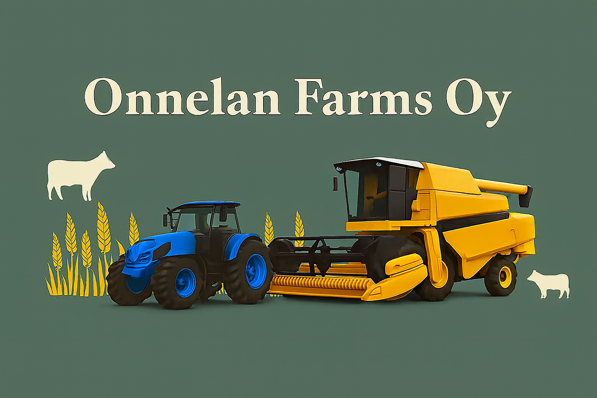
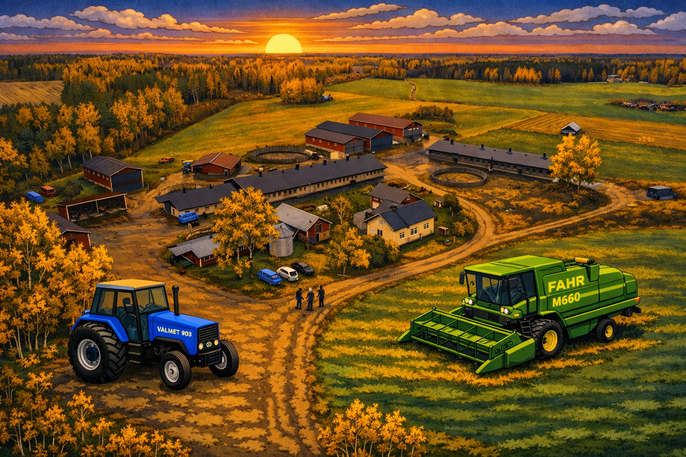

Viljelypalvelut
Kylvö, ruiskutus ja sadonkorjuu sopimuksen mukaan. Räätälöidyt ratkaisut pelloillesi.

Laadukasta viljelyä ja urakointia
Onnelan Farms Oy on nykyaikainen maatila, joka keskittyy lihakarjan kasvattamiseen, viljanviljelyyn, urakointiin ja laadukkaaseen palveluun Pohjois-Karjalassa.

Onnelan tila on perheyritys, jossa yhdistyvät pitkä kokemus ja moderni kalusto. Panostamme maaperän hyvinvointiin, satovarmuuteen ja vastuulliseen tuotantoon.
Kylvö, ruiskutus ja sadonkorjuu sopimuksen mukaan. Räätälöidyt ratkaisut pelloillesi.
Sampo-leikkuupuimuri takaa tehokkaan ja hellävaraisen puinnin eri viljalajeille.
Valtra T235 -traktorilla monipuoliset urakointityöt ympäri vuoden.
Timo Tahvanainen
Vehkapurontie 299
82220 NIITTYLAHTI
Puhelin: 0500831542
Sähköposti: timotah(at)icloud.com